Hello! I am Allie Shumway and I do art. What kind of art? A little bit of everything!
Animation has become my recent hobby, and I enjoy bringing moments from my life to life using Adobe After Effects.
Always keen to learn new tools, my journey into animation is a constant exploration, ensuring a dynamic and enriching creative experience.

 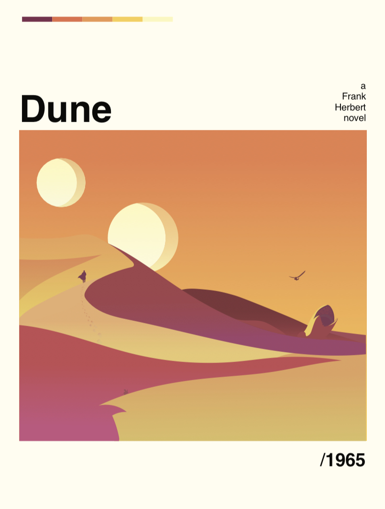
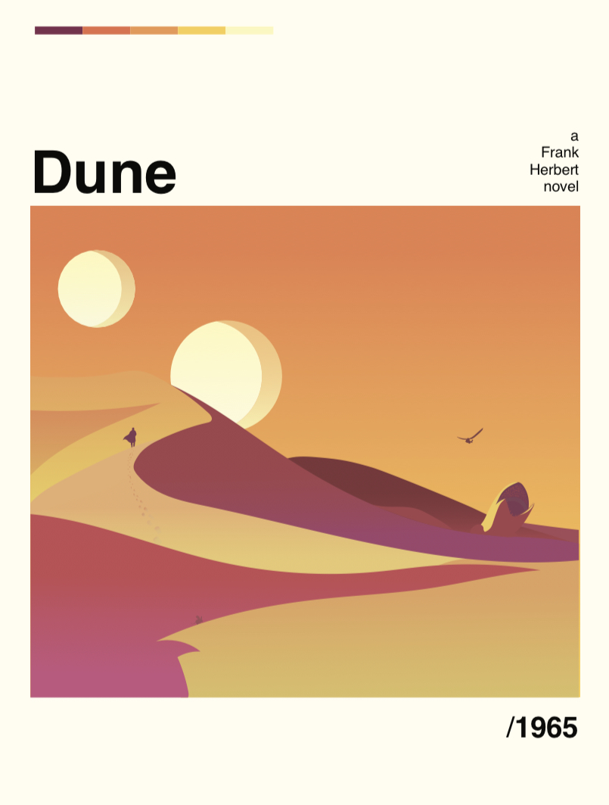
Illustration is something I love to do in my free time. I typically work in Adobe Illustrator.

 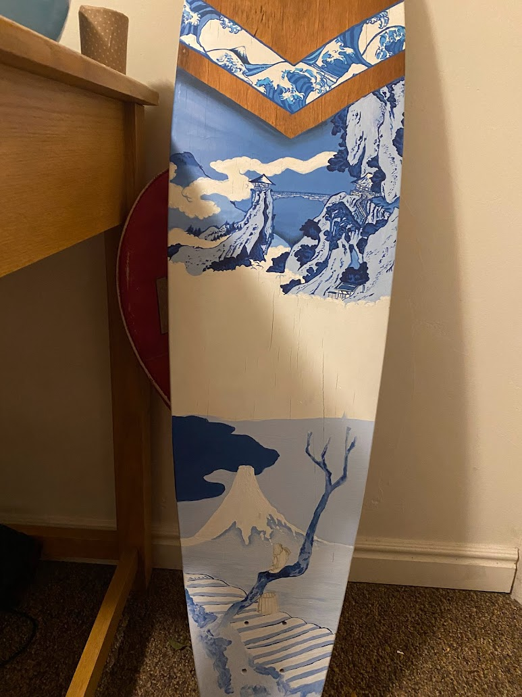
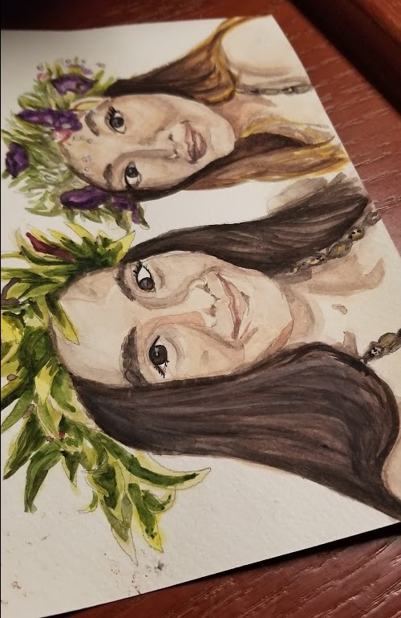
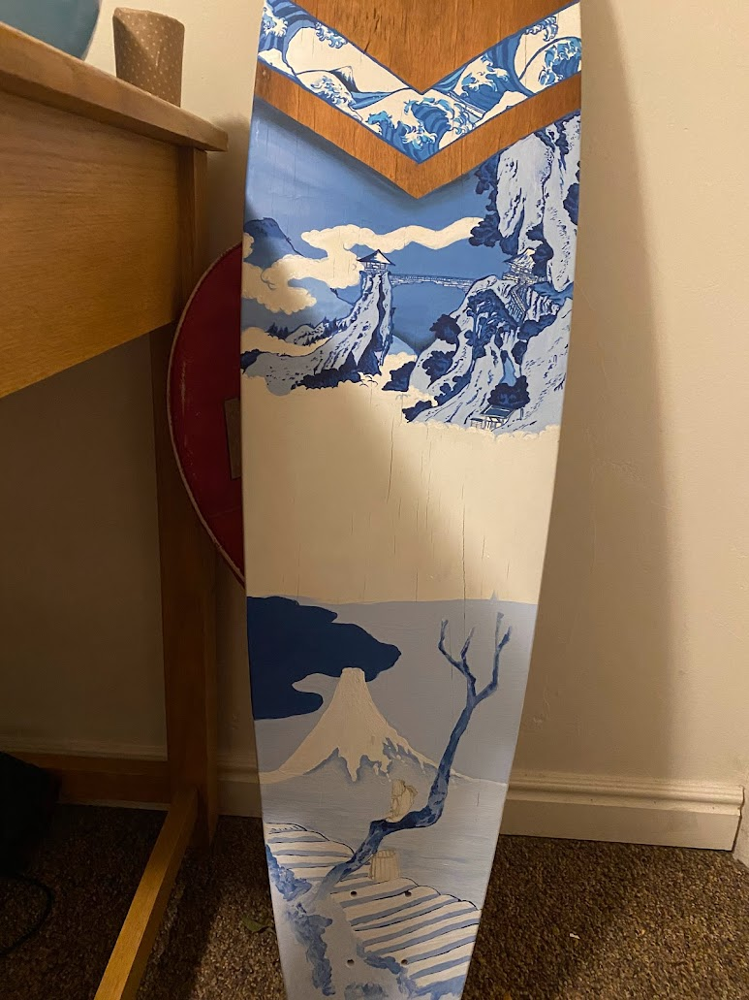
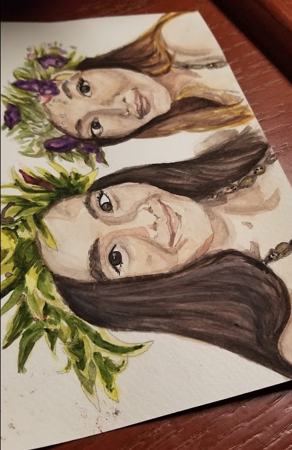
I love and hate painting. My main medium is acylic paint. Sometimes I like to use watercolor. Painting can be frustrating, but incredibly rewarding!
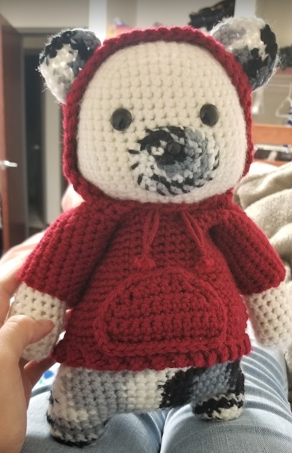 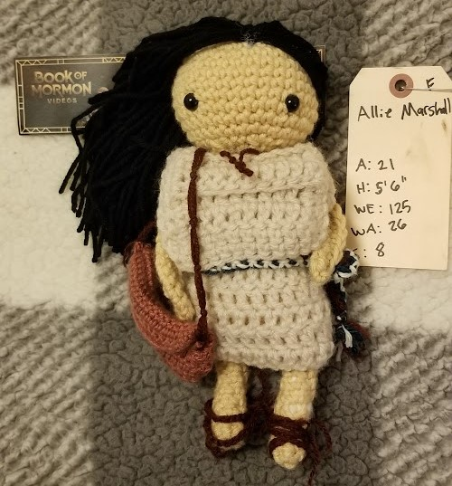 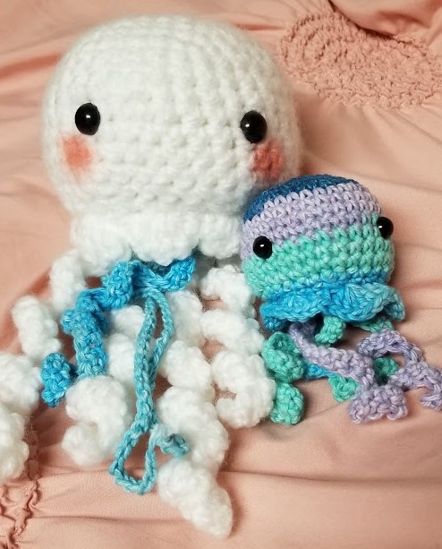 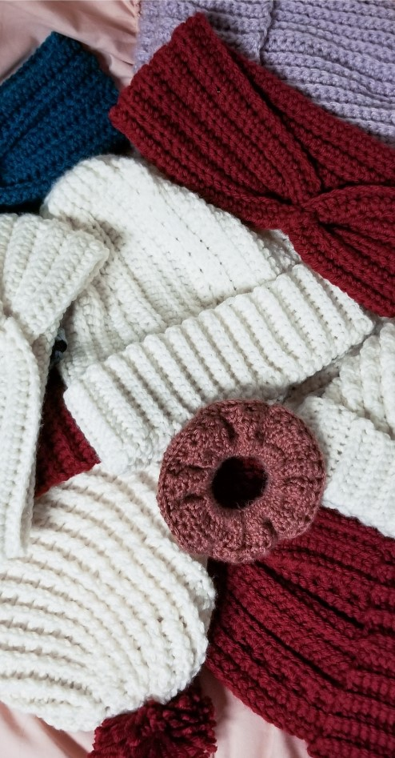Crocheting is my favorite relaxing art form. I can make stuffed animals, dolls, blankets, and clothing. Yarn is typically cotton or polyester.
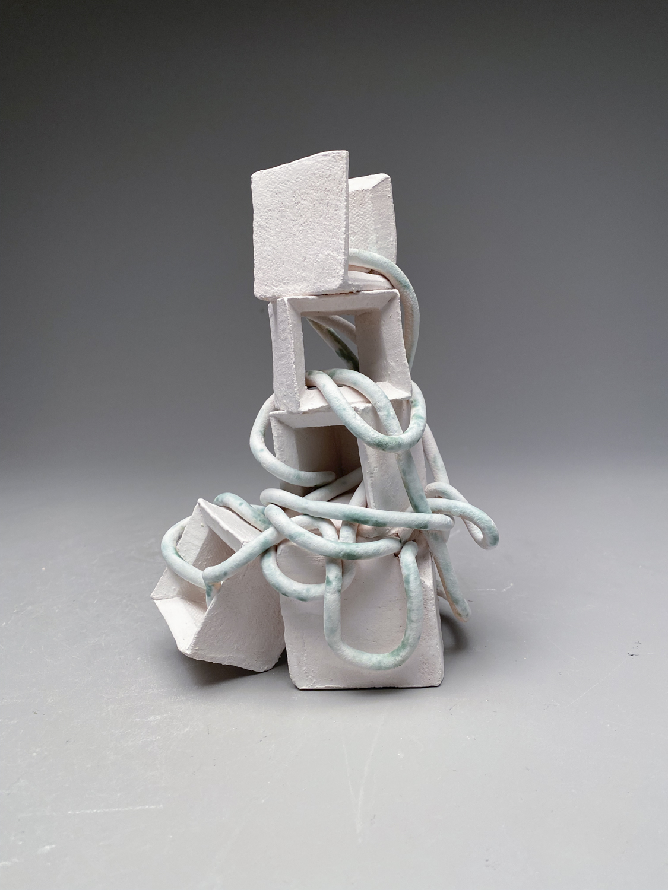Scupting is something I don't do often. However, I love making 3D objects when given the opportunity!